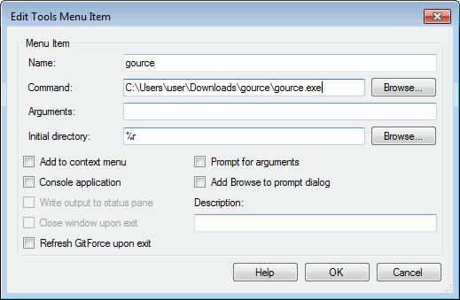
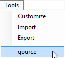

The Tools menu provides ways to integrate external applications and commands within GitForce.
As you add or edit custom tools, you need to specify the tool name (which will be shown on the menus) and command (including the full path to the tool).
Optionally, you may specify the arguments, initial directory to run a tool from and a number of flags.
Within the Arguments and Initial directory specification, you can use macros. Macros will be substituted as the tool is run. These are the macros:
| Macro: | Expands into: |
| %r | Root directory of the current git repository. |
| %u | User name. |
| %e | User email. |
| %b | Active branch of the current git repository. |
| %f | Single selected file in the left pane. If more than one file is selected, the first one is used. |
| %F | List of selected files in the left pane. |
| %d | Single selected directory in the left pane. If more than one directory is selected, the first one is used. |
| %D | List of selected directories in the left pane. |
All file names include full path. Directories do not have trailing slash.
The example shown next is a setting to run gource visualizer (http://code.google.com/p/gource).
The name field is set to the tool name (although it can be anything) and the Command field points to the actual tool executable.
The initial directory is simply set to execute within the current repo root (%r macro).

Once this sample tool has been set, the main Tools menu will have it added:

Clicking on that menu item will start gource tool in the context of a current repo.